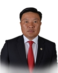

Member of the State Great Khural of Mongolia
Tserenbat Namsrai
Member of the State Great Khural of Mongolia TSERENBAT Namsrai
Mongolian People's Party
Education, graduated schools, education degree:
1996 Secondary school #2, Uvs aimag
2000 BA at Technical University of Mongolia
2001 MA at Technical University of Mongolia
Working experience:
2000 - 2001 “Mobicom” corporation
2003 - 2004 “Tavanbogd” group
2005 - 2010 Deputy director, “Uvs Khuns” company
2010 - 2012 Secretariat of the State Great Hural (Parliament) of Mongolia
2012 - 2015 “Trans consult” company
2015 Head of department, Ministry of Finance
2015 - 2016 Executive director of “UFC” group
2016 Member of the State Great Hural (Parliament) of Mongolia
Awards:
2011 Order of Labour
Foreign language knowledge:
English; Russian